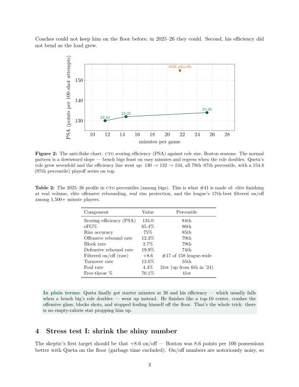
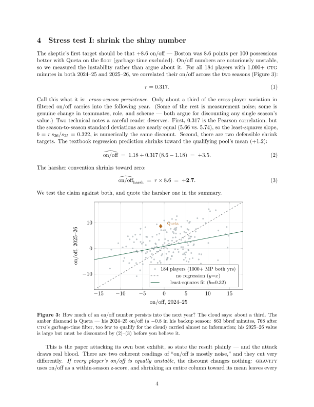

Research Note №2 · A prediction paper · rev. v2
The Queta Problem
Why Neemias Queta is a top-50 player, and why 2026–27 proves it.
Abstract.
Our July 2026 ranking of all 644 NBA players placed Neemias Queta — undrafted-adjacent, twice-waived,
the 39th pick of 2021 — at #41, ahead of household names and a full tier above his public
reputation. This paper treats that placement as a testable claim rather than a quirk. We discount the
model's own shiniest input (his +8.6 on/off) with an empirical persistence model built from 184
player-pairs — read as uniform noise the ranking is unchanged, and under the harshest reading (only his
number inflated) he slips just outside, to #53–55. We run a comparables engine over every statistically
similar big-man season since 2020 — 33 seasons from 22 players, the Gobert / Robert Williams / Jarrett
Allen family — and find a top-50-caliber follow-up rate of 39% by season and 32% by player. And we
stress the one real threat, Boston's signing of Mitchell Robinson, noting the Celtics answered it
themselves by extending Queta for $56 million afterward. The paper ends with a falsifiable
forecast: GRAVITY prices the scenarios, the weights are ours and anchored to observable rates, and under
them we assign roughly 75% to Queta finishing 2026–27 as a top-50 player. We will score this
prediction in July 2027.
Principal findings
- The anti-fluke pattern: his season workload grew nearly sixfold (333 → 1,926 minutes) and his scoring efficiency went up — PSA 130 → 132 → 134, all 79th–87th percentile — where bench bigs normally regress when the role doubles.
- The shiny number, attacked: only about a third of a season's on/off persists into the next year (r = 0.317, n = 184 player-pairs). Discounted uniformly, #41 does not move; discount his number alone — the harshest reading — and he lands #53–55, just outside the claim. The bet never rested on the shiny number, and the paper says plainly that the harshest discount grazes it.
- The base rate: of 33 comparable elite-efficiency, low-usage big-man seasons since 2020, 39% (32% counting each of the 22 players once) delivered a top-50-caliber follow-up — a rate robust to every cutoff variation tested.
- The market's opinion: Boston signed Mitchell Robinson on July 6 — then extended Queta for $56 million anyway.
The registered forecast: P(top-50 in July 2027) ≈ 75% ·
P(top-25) ≈ 40%. Falsification on the record: #50 or better = win · #51–70 = near miss, a failure
owing a diagnosis · below #70 = clean miss. Registered July 10, 2026; grading tightened against ourselves
July 11, 2026; the claim, probabilities, and thresholds are unchanged since registration.


In plain terms: it's not a moonshot claim — it just requires this season to
mostly repeat. We wrote down in advance exactly what counts as being wrong, and #51 counts.
Cite this note
The Gravity Report (2026). "The Queta Problem: Why Neemias Queta Is a Top-50
Player, and Why 2026-27 Proves It." GRAVITY Research Note No. 2, v2.
https://thegravityreport.com/notes/queta/
@techreport{gravity2026queta,
author = {{The Gravity Report}},
title = {The Queta Problem: Why Neemias Queta Is a Top-50 Player,
and Why 2026--27 Proves It},
institution = {The Gravity Report},
type = {GRAVITY Research Note},
number = {2},
year = {2026},
month = {7},
note = {v2, revised July 11, 2026},
url = {https://thegravityreport.com/notes/queta/}
}
Revision note (v2, July 11, 2026), following external review: model output
separated from editorial scenario weights, with each weight anchored to an observable rate; "two-thirds
noise" corrected to cross-season persistence (least-squares slope reported alongside r); the shrunk-on/off
counterfactual re-run properly — #53–55, not the ≈#48 a shortcut produced in v1; comparables disclosed as
33 seasons / 22 players with a cutoff-sensitivity table; grading tightened: #51–70 is a near miss, not a
push. The registered forecast itself is unchanged — that is the bet.